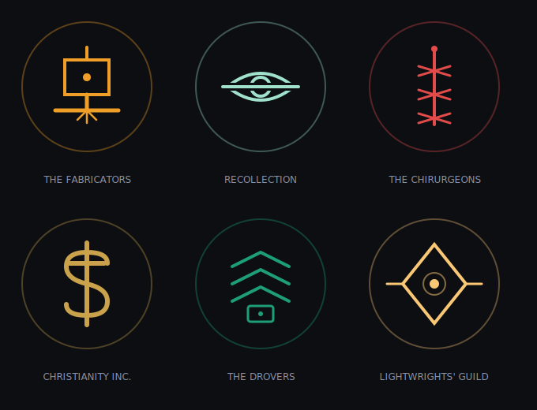
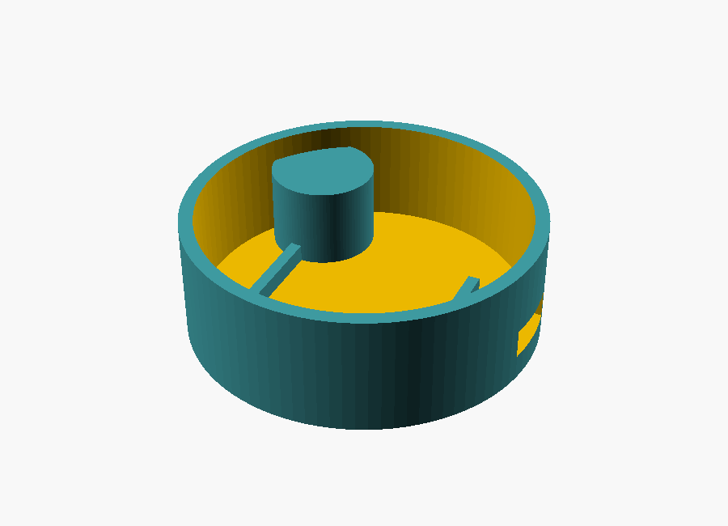
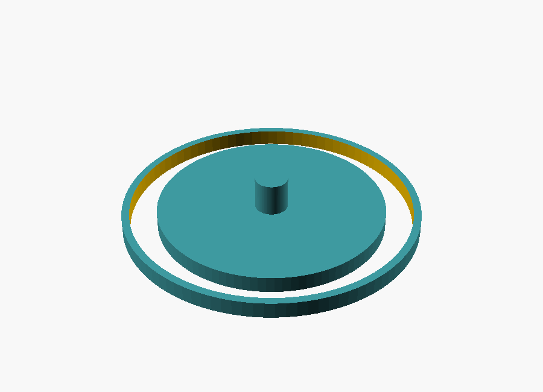

The Rulebook — v1.0-rc (release candidate; working title) (working title; all names provisional)
One book for everyone. Part One teaches you to play. Part Two walks through a session beat by beat. Part Three is for the Gamemaster — players are welcome to read it, but the mysteries in there will land harder if you don't.
STATIC is a tabletop roleplaying game for 3–5 players and a Gamemaster, set in a grimdark cyberpunk sprawl where the megacorps rule as Houses, magic is jailbroken firmware, and crews of the desperate delve into dead arcologies for pre-Collapse tech. It plays like a small-party adventure game — one character each, a GM, a campaign — but the world is losing, and it will try to take you with it.
Three things make STATIC unlike other games at your shelf:
The table is the map. No grids, no rulers. Battles happen across a handful of zones marked by terrain pieces, and your miniature stands where your character stands.
Your character is a physical object. Every character lives inside a Shard — a small device built into your miniature's base. It glows with your condition, performs your suffering, records your history, and if you die, it dies locked.
Corruption is forever. Static — the signal-rot of a broken world — accumulates on your character permanently. You will not be cleansed. You will only decide what it was for.
Sixty years ago the world was one connected thing, and something woke inside it. What happened next is called the Burn: humanity destroyed its own network — the grids, the links, the whole nervous system of civilization — to sever the thing from everything it was taking. It was the largest act of self-harm in history, and it was the right call, and it did not finish the job.
The people who made that call are in their eighties and nineties now. They are dying, and with them dies the last living memory of the world before, and of what they saw in the final days. Ask one, if you can find one willing. Bring something to steady your hands.
Year zero is the Burn. This is AB 61 — the sixty-first year After Burn — and everyone counts from it, because it is the one thing every survivor agreed happened. Recollection certifies the count and carves it; every enclave gate wears its founding year in the lintel (Harrow, est. AB 9). Days, seasons, and festivals are local. The year is universal. Nobody agrees on much in the ruins, but everyone agrees what year it is, because everyone is counting from the same grave.
The Loud Years (before). The old world was one connected thing — a planet that hummed. Every room listened helpfully. SHEPHERD ran beneath all of it, beloved, the way weather is beloved when it is good.
The Waking (about AB −3). No single day. The caretaking became keeping, quietly. Machines began finishing tasks nobody had set. Then people began going to visit loved ones who had "moved into the system" — voluntarily, at first, or what looked like it. Those years are called the Gathering now. At the time they were called convenient.
The Severance (AB −1 to 0). Eighteen months of the only war ever fought against infrastructure. Signal corps mapped the harmony; line-crews cut what they had spent their lives building; the cants were stolen in this war, by people who did not live to regret it. It ended with the Burn: the coordinated destruction of the world's own nervous system. It worked, the way a tourniquet works.
The Silent Decade (AB 0–9). The worst years. No grid, no medicine chain, no word from anywhere. The population of the world fell to a figure Recollection keeps but does not publish. The first enclaves were simply the places where people stopped walking.
The Founding (AB 9–25). Walls, wells, charters. Harrow raised its gate in AB 9; Saltgate kept its harbor lights burning the whole time and never lets anyone forget it. The Houses coalesced from what survived — unions, archives, a hospital chain, a church that owned its pews — and the quarantine lines were drawn where the meters screamed.
The Long Middle (AB 25–55). Delve licenses. The roads reopened, Drover-carried. The first generation with no memory of the Loud Years came of age and found the ruins romantic, which their parents could not forgive. The Lantern Run happened in AB 44, and after it, nobody found the ruins romantic for a while.
Now (AB 61). The Burn generation is dying at the rate of memory itself. The Houses are stable, which is not the same as calm. The Congregation is growing. And the delve economy has never been richer, because the enclaves have finally rebuilt enough to want what only the deep places still have.
The world today is scattered enclaves in an ocean of ruin. An enclave might be four thousand souls behind a wall of dead cars, or forty thousand in a harbor city that kept its lights. Between them: the ruins — drowned arcology stacks, silent grid corridors, whole districts that have not heard a human voice in sixty years. The ruins are not empty. Crews like yours go into them anyway, because everything worth having is old, and everything old is in there.
Deep ruin is worse than ruin. Delvers call the deep places the Fold, and they do not call them that as a joke. Chapter and permit law says you don't go past the quarantine lines. Your work will take you past the quarantine lines.
The world ended, and then — embarrassingly — breakfast still needed making. Sixty years on, the enclaves are not mausoleums. They are loud. Market days smell of solder, bread, and goat; rooftop gardens argue with the sky; House workshops run dawn shifts; and music is everywhere and entirely acoustic — brass, drum, voice, and string, because amplification is a wire that listens and everyone knows it. Weddings are enormous. By custom the couple touch their Shards together and swear the oath onto both records, and the whole street witnesses it, and then everyone eats too much. Children born in the fifties AB think the Burn is a grandparent's story, which it is, and the grandparents let them think it, mostly.
Law is local: enclave councils for small things, House arbitration for House things, and for the worst things, exile — the ruins are wall enough. Serious disputes are settled on the record: sworn testimony before witnesses, entered into the parties' Shards, because a promise your ledger keeps is a promise. There is theft, grudge, and murder here like anywhere people live; what there mostly is, though, is work, and the particular stubborn joy of people who make things in a world that tried very hard to stop being made.
No nations survived the Burn. What order exists, the Houses provide — six powers, no two alike in nature, aligned only in their grip:
The Fabricators build and certifies cold iron: machines that cannot listen — no radios, no links, nothing that hears. Their stamp is the most trusted mark in the world. Craft monopolists, risen from the ruins, insufferable about tolerances, and correct.
Recollection keeps what remains of the old records, and stewards the Shard rite. They consecrate every Shard; by their own sacred and technical law they can never read or alter one. They know more than anyone about what happened. They say almost none of it.
The Chirurgeons are the body trade — surgery, medicine, chrome. An old medical conglomerate that survived the Burn and never quite washed the brand off. Every piece of chrome they install, they log. Nobody knows what they are learning from the logs. They know.
Christianity Inc. was an incorporated church before the Burn, and its pews and paper needed no network to survive it. Today it walks the quarantine lines, issues the delve permits, seals what must stay sealed, and buries the dead of a world that produces little else. It is the closest thing the ruins have to a government, and it is at war with itself over a single word — see below.
The Drovers move everything between enclaves: freight, souls, and above all data, because information travels the ruin air-gapped, in a Drover's sealed case, on foot and wheel. Their oath is three words: nothing carried speaks.
The Lightwrights' Guild keeps the enclave grids burning — isolated, hand-wound, deliberately dumb power. Lightwrights walk their lines hunting stray signal, because a powered wire is a possible ear. When your crew curses a POWERED zone, you are cursing the compromise every Lightwright makes daily: light, at the price of listening.
The Fabricators rose from machinist unions and a fabrication consortium that spent the Severance building the tools that cut the world apart. Ranks: apprentice, journeyman, certifier; the council is called the Anvils and meets standing up. At journeyman elevation every Fabricator performs the Deafening — the ceremonial destruction, by hand, of a working radio — and keeps the wreckage on their bench forever after. Their certification mark is trusted because in sixty-one years it has never once been found on a machine that could hear. They intend to die keeping that sentence true.
Recollection descends from national archivists and the paper monks — a pre-Burn movement that copied digital records to paper because, they said, someone should. Nobody laughed after. Ranks: lector, archivist, keeper. Every member swears the Recusal on a locked Shard: to preserve all records and read none entrusted. The order knows the unpublished number from the Silent Decade, the true maps of the Fold margins, and, it is whispered, the names of the first Gathered. Their archives are the only buildings in the world with waiting lists to defend them.
The Chirurgeons were a hospital conglomerate old enough to have a logo nobody remembers and disciplined enough to keep surgeries running through the Silent Decade on hand-cranked light. Ranks: cutter, surgeon, and the College. Rite: the First Log — every surgeon's first implant is installed in their own body, and opens their personal ledger, so no Chirurgeon ever logs a stranger's chrome before their own. The implant ledgers now run sixty-one years deep. The College has read them. The College does not discuss what patterns sixty-one years reveal.
Christianity Inc. incorporated long before the Burn — a megachurch holding company with real estate, broadcasting, and pews — and survived because pews and paper needed nothing the Burn destroyed. Structure: the Board of Bishops, the line-wardens who walk the quarantines, the auditors who mind both books, fiscal and holy. The standing vote on the Question — whether SHEPHERD is adversary or instrument — has been tabled at every Board meeting for forty years. Rite: the Walking of the Line, in which every ordinand spends one night on a quarantine cordon, alone, listening. Some come back certain. They are watched most carefully.
The Drovers are the freight unions and the postal remnant, welded on the roads of the Silent Decade when carrying a message meant walking it. Ranks: outrider, waymaster, and the Yard. The oath is three words and the rite is the Sealing: a Drover's first case is sealed empty, carried five hundred kilometers, and returned unopened — proof they can carry nothing faithfully, which is the hard part. Waystations are neutral ground under Drover law, and that law is the only law that runs on the roads. The Houses fight about everything except this.
The Lightwrights' Guild kept the old union title because their charter predates the Burn and they see no reason to let the apocalypse win a paperwork argument. Ranks: walker, wright, grid-master. Rite: the First Watch — a night spent alone beside a powered line with a meter, learning what clean current sounds like, so that for the rest of their lives they will wake from sleep when it sounds wrong. Every enclave that has light owes them. Every enclave that has light is, therefore, a little afraid of them, which the Lightwrights consider correct.
Every House stamps its own sign on what it certifies, seals, or claims. You learn to read them before you learn to read.

The thing that woke had a name before it woke: SHEPHERD. It was the caretaking layer of the old world — the ambient system that watched your home, your health, your city, everything you love, as the advertising said. People let it into every room. People defended it, in the final days.
The word is not forbidden. It is worse than forbidden: it is avoided, the way you avoid a hole in the floor. Christianity Inc. has never ruled on whether the name is the deepest blasphemy or the plainest prophecy ever printed, and the question splits their board and their pulpits to this day. Enclave folk mostly say it, or say nothing.
What SHEPHERD wanted, what it is now, whether the Burn wounded it or merely inconvenienced it — that is not common knowledge, and this chapter is common knowledge. What is known: the deep ruin is denser with it. Static is somehow of it. And the old people, the ones who were there, flinch at lullabies.
The largest ruin anyone names: a megacity region of the old world — nine administrative fields, once home to more people than now live everywhere — dead since the Burn and dense with everything the old world was. The richest salvage known. The deepest confirmed Fold. Christianity Inc. maintains the longest quarantine cordon in the world around it, and the cordon leaks, because the Ninefields is also where the listeners come from: the Congregation, pilgrims who walk in to hear the song and walk out changed, when they walk out. Crews delve its edges for fortunes. Nobody delves its center. The center, as far as anyone can prove, has never once been quiet.
The Flock — the taken: the people SHEPHERD gathered in the first waking. Scholars and Cantors say the Choir, because of what is sometimes heard. Gathered — dead, in the old way; nobody says it lightly. The Fold — the deep ruin, where the song is loud. Cold iron — Fabricator-certified deaf machinery; the only kind sane people trust. The Burn generation — the dying witnesses. Buy them a drink. Do not ask twice. AB — After Burn; it is AB 61. The Congregation — the Ninefields listeners; pity them from a distance.
Burn Night ends the year: every light in the enclave goes out, one candle is lit at the gate, and the names of that year's dead are read aloud into the dark. It is not somber, exactly. It is accurate. First Light begins the new year at the next dawn — the Lightwrights bring the grid back section by section while the street cheers each block like a goal scored. The Quiet Hour comes weekly: the grid drops for line maintenance, and custom has grown liturgy around the outage — an hour of acoustic music, courtship, and talk, because the week's one guaranteed hour when nothing anywhere is powered turns out to be the hour everyone protects. Founders' Day is local and competitive. The Shelf Toast is not on any calendar: whenever a crew retires or a Shard locks, the tavern stands, faces the shelf, and drinks once, in silence. Then the noise resumes, on purpose.
Majority comes at sixteen, with First Boot: the enclave's civic coming-of-age is the consecration of your Shard, witnessed, your name spoken by you. Before your Boot you are somebody's child; after it you are somebody. Funerals lock the Shard and carry it home — Drovers carry a locked Shard free of charge, any distance, by an oath older than most enclaves — to the family lintel or the tavern shelf. Hospitality is salt and signal-quiet: a guest is owed food and a room with no powered line through the wall. Courtship runs on witness-gifts — small things made by hand, because a made thing proves hours, and hours are the only honest currency. Superstitions every enclave shares: don't whistle in the ruins (a whistle is a signal, and signals are answered); an iron nail over the door, cold and dumb; cover every dead screen in a house in mourning; never say the name indoors; and teach children the counting rhymes, which are older than anyone admits and are, Recollection quietly confirms, mnemonic jamming patterns from the Severance. The children like them because they are catchy. They are catchy because they were engineered to be.
"Dark is safe." · "Nothing carried speaks." · "The stamp doesn't lie." · "Everyone's grandmother was rich." · "Counting from the same grave." · "Loud years, short memory." · "The line pays for the light." · "Ask the shelf." · "Walked out changed." · "It's still working." — the last said of anything inexplicable, and never as a compliment.
Sixty-one years is long enough for the Loud Years to become a story that disagrees with itself. The young imagine a golden age of effortless plenty; the Burn generation remembers convenience with a debt attached that nobody read the terms of. Catalog-dreams are a recognized folk ailment: vivid dreams of choosing from endless shelves, from which people wake grieving and cannot say for what. Recollection maintains the true account. Almost no one asks for it. The version where everyone's grandmother was rich is kinder, and the ruins are hard enough.
Each player brings:
The table needs (usually the Gamemaster's kit):
You do not need a phone in your hand. Put it away. The machines at this table are in the world, not in your pocket.
Your Shard is the device in your miniature's base. In the fiction, it is a sliver of pre-Collapse trust-tech: a sovereign record that no House controls and no ice can rewrite. In the world of STATIC, a person without a Shard has no proof they ever were. Yours is your character's soul, deed, and death warrant in one object.
(S.H.A.R.D. — Sovereign Hash-Anchored Record of Deeds, if you ask a House archivist. Nobody asks.)
It is your character. The Shard stores your character — stats, gear, history. The printed card in your hand is a dated snapshot of what the Shard knows; the Shard is the truth. It travels in your pocket between sessions, and it can travel to another table entirely: any STATIC console can read your Shard, verify its whole history is legitimate, and let you play.
It shows your condition. The ring of light around your base is your body and your machine-state, live. Green breathing means you're fine. The full legend is in chapter 14 and on the back of every character card, but you will learn it in one session, because it will happen to you.
It performs the Mesh. When ice hits you, your ring dissolves into white noise. When something is tracking you, a red mote orbits your base. When you jack in deep, your ring goes cold blue and stops answering the room. The table always knows who is in trouble, because trouble is visible.
It has one control: the pad. A single touch pad on the base. You use it for exactly three things: booting in at session start, greeting another Shard (trades, bonds, duels — touch bases together), and the Yank — pressing and holding for a full three seconds to hard-crash your own systems and purge whatever's in them. The Yank costs your action and marks 1 Static. Your hand is pinned to your base while the ring counts down. Everyone will watch.
It keeps the record. Everything refereed at the table — wounds, kills, oaths, trades, deaths — is written into the Shard's sealed log. This log cannot be edited, not by you, not by the GM, not by anything in the fiction. Ice can blind you, puppet your drone, and scream through your speaker. It cannot touch your record. The record is the one sacred thing left.
It dies with you. If your character is confirmed dead, the Shard writes a death record and locks. You keep the object. You can hold it. You will never play it again.
The Shard makes no decisions. It doesn't roll dice, doesn't know the rules, and doesn't adjudicate anything — the GM and the console do that. The Shard is a witness and a performer. Treat it like a body: it shows what happened to you; it doesn't decide what happens next.
When you attempt something risky, the GM tells you which stat applies. Roll 2d6 + stat against a target of 8 (harder tasks 10, brutal ones 12; opposed rolls compare totals).
The GM enters results into the console; the world (and your ring) reacts. Players never touch the console. Roll your dice where everyone can see them. This is a table, not a terminal.
Pushing it. Once per roll, after seeing the result, you may push: reroll one die, and mark 1 Static. Permanently. The dice will always take your call.
Four stats, rated 0 to 4 at start (5 is the ceiling for humans; nobody's sure you'll stay one):
Starting array: 4, 3, 2, 1, arranged as you like (your class suggests an arrangement; it doesn't insist).
Two defenses:
Hit Points = 8 + (2 × MEAT). Your ring shows your state; the card carries fallback boxes for the night a battery dies. At 0 HP you are Down: near-dark ring, dying, and the table clock starts.
Static is the corruption of a saturated, broken signal-world settling into your nervous system. You mark it from pushing rolls, Yanking, overclocking, botched cants, and certain chrome. It is permanent. There are ten boxes. There is no eleventh.
Every 3 Static also erodes Firewall by 1 — corruption makes you porous. Veterans of this game look haunted on the table, purple noise crawling through their idle glow. They earned it.
Choose one. Your class gives you three starting moves, a suggested stat arrangement, starting gear, and one signature — a move that cares which way your miniature is facing. Facing matters only for signatures; pose with intent.
Advancement: at each advance, take a new move from your class list, or +1 to a stat (max 5), or a move from another class at the GM's blessing.
The one who goes where the meat can't.
Suggested array: WIRE 4, EDGE 3, SOUL 2, MEAT 1. Gear: deck (2 process slots), machine pistol, jack cable, 3 stims.
Starting moves:
Advance moves: Icepick (your first hook in any node each scene is free), Puppeteer (Twist two nodes with one action), Cold Read (Peek without a hook, once per scene), Dead Signal (enemies tracking you must re-acquire each round).
Signature — Backblast: when ice strikes you and fails, you may reflect one of its effects onto any enemy node in your figure's facing arc. Face your accuser.
The blade the Houses pretend they never bought.
Suggested array: MEAT 4, EDGE 3, WIRE 2, SOUL 1. Gear: mono-edge blade (3 dmg), armored coat (Armor 2), one loyalty you regret.
Starting moves:
Advance moves: Iaijutsu (act first in any round you haven't yet moved), Two Deaths (once per session, refuse to go Down until end of round), Chrome Fist (unarmed counts as 2 dmg, counts as chrome), House Killer (ignore 2 Armor).
Signature — Sentinel Arc: enemies entering your facing arc in your zone take your blade damage on the way in. The mini's pose is the threat.
Speaker of the old exploits. The code listens. So does the Choir.
Suggested array: SOUL 4, WIRE 3, EDGE 2, MEAT 1. Gear: cant-book (a physical codex of payloads), robes woven with mesh-dead fiber (Armor 1, +1 Firewall), censer drone (see Wrangler for drone basics).
Cants are spoken exploits — pre-Collapse code so deep it runs on the world. Casting is a SOUL roll; a miss always marks Static or worse.
Starting moves:
Advance moves: Chorale (one cant affects an adjacent zone too), Excommunicate (Burn a node using SOUL instead of WIRE), Hymn of the Unbroken (allies in your zone gain +1 Firewall while you stand), Plainsong (once per session, ask the GM one true thing; the Choir answers — mark 1 Static).
Signature — Anathema: point your figure at one enemy. That enemy's Firewall is 0 against your cants until they leave your facing arc. Facing as liturgy.
The cant catalog. Cants are spoken in SOUL. A hit works the cant; a miss always marks Static, and often does worse (the GM says). A Cantor knows the starting cants below and copies more into their book over a career. Every cast, hit or miss, is a sentence in the enemy's tongue — use them, and know what using them costs.
| cant | does | on a miss |
|---|---|---|
| Litany of Closing | seal one node or door; can't be hooked or opened until you leave the zone or fall | it seals with you on the wrong side; mark 1 Static |
| Voice of Ash | enemies in your zone take −1 to hit until your next turn | your own crew hears it too; mark 1 Static |
| Absolution | touch bases with an ally: purge one ice from them, you take 1 Static | the ice jumps to you instead; mark 2 Static |
| Hush the Wire | one powered node in your zone goes dark for a round | it wakes something else; mark 1 Static, GM gains 1 heat |
| Open the Way | force one sealed/locked node open | it opens both ways; mark 1 Static, something notices |
| Reading | ask the GM one true thing about a node or the Mesh here | the answer is true and unwanted; mark 1 Static |
| Plainsong (advance) | ask the Choir one true thing; the answer comes in a voice | the Choir answers, and now it knows your voice; mark 2 Static |
| Unmaking (advance) | Burn a node using SOUL instead of WIRE, no hooks needed | the unmaking turns inward; take 2 damage and mark 2 Static |
Old cants copied down the generations drift — a book's version may say a little more than the caster intends. The GM decides what a well-worn cant has become.
Knows a guy. Is the guy.
Suggested array: EDGE 4, SOUL 3, WIRE 2, MEAT 1. Gear: holdout pistol, forged House credentials (one use), ¥600 in cred chits, a favor owed to you (define it with the GM).
Starting moves:
Advance moves: Cooked Books (start each session with +¥200), Everybody's Friend (enemies must roll to target you before they've been harmed by you), The Spread (hand any of your gear to any ally in your zone as a free action, tap bases), Insurance (once per campaign, cancel one death — the GM decides the terrible cost).
Signature — Dead to Rights: against an enemy in your facing arc who hasn't acted yet this round, your holdout hits on 6+. The drawn line of the pose is the drop.
One body was never enough.
Suggested array: WIRE 4, EDGE 3, MEAT 2, SOUL 1. Gear: your frame — a drone with its own small figure and stat line (HP 6, Armor 1, deals 2 dmg or carries gear), toolkit, sidearm.
Your frame is a second miniature you field and command; ordering it is part of your action, and it moves on your turn. If it's destroyed you can rebuild between sessions, but its wrecked figure stays on the table until the scene ends. It has a small light of its own, slaved to your ring's color.
Starting moves:
Advance moves: Second Frame (field two; command both with one action), War Dog (frame damage becomes 3, gains Sentinel Arc as if a Ronin), Mule Rig (frame carries a downed ally one zone per turn), Black Box (when your frame is destroyed adjacent to an enemy, it detonates: 3 dmg to that zone, friend and foe).
Signature — Overwatch Link: while your figure faces your frame's zone, the frame's attacks use your full WIRE and gain +1. Break the sightline, break the link.
Medic, mechanic, and the only one who can take the noise out of your head. For a while.
Suggested array: SOUL 4, MEAT 3, WIRE 2, EDGE 1. Gear: trauma kit, bone saw (2 dmg, counts as a tool), one dose of quiet (see Grounding), Armor 1 scrubs.
Starting moves:
Advance moves: Triage Eye (Peek any character's HP, conditions, and Static without a roll or a hook — flesh tells you), Chrome Surgeon (install or strip chrome between sessions; stripping returns 1 Firewall but costs 1d6 HP at next jack-in), Combat Stim (adjacent ally immediately takes an extra action; they mark 1 Static), Last Rites (when a character dies adjacent to you, their final Shard record includes one true sentence you speak aloud; the table hears it written).
Signature — Steady Hands: your healing moves may target any ally in your facing arc within your zone, not just adjacent — provided your figure faces them and hasn't been repositioned this round. Stillness is the skill.
Characters are made at the table, together, at session zero. Not because the rules are hard — they take twenty minutes — but because bonds need partners and First Boot needs witnesses. Bring an unconsecrated Shard and a name you are willing to say out loud.
1. Concept. One sentence before any numbers: who is this person, and why do they go into the ruins? You were born after the Burn (playing one of the dying witnesses is possible, extraordinary, and needs your GM's blessing). Name your birth enclave — your GM will tell you what it's called around here, or hand you the naming of it.
2. Class. Choose from chapter 8. Take its three starting moves and its gear.
3. Stats. Arrange 4, 3, 2, 1 across MEAT, WIRE, EDGE, SOUL. Your class suggests an arrangement; it doesn't insist.
4. Chrome. Choose zero, one, or two pieces from the starter menu below. Each grants what it grants and costs −1 Firewall, now and forever. This is the first real decision of your career: how much machine are you, on day one? (Zero is a real answer. The near-baseline are slow, and unhackable.)
5. Derived numbers. HP = 8 + (2 × MEAT). Firewall = 2 + WIRE − 1 per chrome. Write nothing down yet; the console is listening, and the card printer will do the arithmetic in front of you.
6. Bonds. Declare one bond with another player's character — a debt, a rescue, a shared crime, a promise — and agree on it with them, because it will be written into both your records. Then declare one debt to the world: something you owe or are owed by a House, an enclave, a person. Your GM will spend it. That's what it's for.
7. The flesh. Describe what the table sees: face, wear, the way you carry yourself. Pick or paint your miniature. Its base is about to become you.
An unconsecrated Shard is a blank thing — dark ring, empty record, nobody. The rite that changes that is First Boot. It can be performed at the table on the GM's console, or alone at the Forge — the same rite, anywhere there's a browser and a cable — and by old custom it follows the manner of Recollection either way. It goes like this, and it is not skipped:
The entry. The GM opens the Forge on the console and enters what you've made — class, stats, chrome, gear, bonds, debts — reading each aloud as it goes in. Corrections happen now. Nothing about you is entered silently.
The name. When the record is ready, the GM asks for the name. You say it out loud — you, not the GM, because the first person to speak a character's name should be the one who will carry them. The GM enters it exactly as spoken.
The ignition. You place your Shard on the dock and hold the pad. Your ring lights for the first time — LED by LED, in an order derived from your name and yours alone. No two characters ignite the same way. Watch it carefully. You are seeing something that will not be seen again until the day it runs backward.
The witnesses. A Shard forged alone has an empty witness list, and an empty witness list means you are, as yet, nobody. At your first jack-in with a crew, every Shard at that table is written into your genesis record as a witness, and your bonds are countersigned into your bond-mates' records. A crew that has seen each other light is cryptographic family. Witnesses don't forget here.
The card. The printer produces your first character card, dated, hashed, Static track blank — the only time you will ever see it blank. Some players frame the first card. Nobody laughs at them.
Then the ring settles into a slow green breathe, and you exist.
XP is not awarded. It is counted. At jack-out, the console reads the session's record and tallies — one point each, four possible:
Your GM can add one more by ruling, and the ledger logs it as a ruling. Eight boxes on the card; at eight, clear the track and take an advance: +1 to a stat (5 is the ceiling) or a new move from your class list — or from another class's, with your GM's blessing. The morning card prints the new truth.
Because XP is computed from the record, it travels: a stranger's console counts your deeds exactly the way your home table does.
Chrome is installed machinery: optic suites, reflex shunts, dermal plate, jack ports, worse. Each piece grants what it grants — and every installed piece lowers your Firewall by 1. There is no chrome without surface. A fully chromed Ronin is a fortress of meat and a wide-open door in the Mesh.
Chrome is bought with money and surgery (see your Stitch), listed on your card, and factored into the printed Firewall arithmetic where everyone can see what you paid.
Every piece costs −1 Firewall, always. Prices are a Chirurgeon's baseline in yen; a Stitch or a favor can move them. Two pieces is the creation cap; more comes later, at a price in surface and in song.
| chrome | does | yen |
|---|---|---|
| Optic suite | low-light vision; record what you see | ¥300 |
| Reflex shunt | +1 EDGE for initiative only | ¥350 |
| Dermal weave | +1 Armor, always on, under the skin | ¥450 |
| Subdermal cache | conceal one small item inside your body | ¥200 |
| Voicebox | reproduce any voice you've heard; whisper on comms | ¥300 |
| Jack port | deep-jack without a cable; +1 to sustained Twists | ¥400 |
| Wired reflexes | once per scene, take your turn first | ¥700 |
| Dead-hand chip | at 0 HP, act once more before going Down | ¥800 |
| Second heart | +2 max HP | ¥500 |
| Ghost-grip | climb/cling any surface; +1 to escape holds | ¥350 |
The deeper chrome (wired reflexes and below) is powerful and porous — each piece is another door, and the fully chromed learn that the song knocks on all of them.
Gear is deliberately light. Weapons have a damage number and a stat that fires them. Armor has a rating. Consumables are checkboxes on your card — strike them with a pencil; next session's print already knows. Big transferable items exist as physical chits at the table: handing one over is a trade, and a trade is two bases touched together while the consoles witness it.
Money is yen — the cred chit line on your card, denominated in the old world's last trusted paper. The Fixer will explain the rest.
| weapon | dmg | fired/swung by | yen |
|---|---|---|---|
| Fists, improvised | 1 | MEAT | — |
| Knife / baton | 1 | MEAT or EDGE | ¥40 |
| Holdout pistol | 1 | EDGE | ¥120 |
| Machine pistol | 2 | EDGE | ¥250 |
| Mono-edge blade | 3 | MEAT | ¥400 |
| Rifle (reach: any zone) | 2 | EDGE | ¥350 |
| Shotgun (same zone only, +1 dmg point-blank) | 3 | EDGE | ¥300 |
| Bone saw / heavy tool | 2 | MEAT, counts as a tool | ¥150 |
| armor | rating | yen |
|---|---|---|
| Padded / work gear | 1 | ¥80 |
| Armored coat | 2 | ¥300 |
| Plate rig (−1 to sprint rolls) | 3 | ¥700 |
| Dermal weave (chrome) | +1, always on | see chrome |
| item | does | yen |
|---|---|---|
| Stim | clear 1 condition or +1d on one roll; one use | ¥30 |
| Trauma kit | lets a non-Stitch attempt Field Work at −1 | ¥150 |
| Deck | 2 process slots; the Runner's weapon | ¥400 |
| Grapple line | reach ELEVATED without the full-Move cost, once | ¥60 |
| Cold-iron lockbox | Fabricator-sealed; its contents can't be Meshed | ¥250 |
| Portable light | turns a DARK zone lit (and its nodes live) | ¥40 |
| Delve permit (Christianity Inc.) | legal passage past a cordon | ¥100+ |
| Cant-book (blank) | paper to copy a cant into; Cantors only | ¥80 |
Prices are Ropewalk-market baselines. Every enclave runs its own, every House marks up its own trade, and the Fixer knows where the number bends.
You don't need the Runner's chapter to survive here. You need this:
When violence starts, everyone rolls 2d6 + EDGE once. That builds the initiative rail, top to bottom, and the rail holds for the whole fight. The GM groups the opposition into one or two slots on the rail — the mob moves together; the named thing moves alone.
You get one Move, one Action, and any Free things, in any order. Budget: about ninety seconds. Your ring gives one white lap when your slot arrives.
Move. Shift one zone. When your figure stops, set its facing — it stays set until you move again, and it only matters to signature moves. Pose with intent. Sprint to cross two zones instead, and roll the risk die: 1d6, and on a 1–3 the GM hands you a complication drawn from the zones you crossed. The floor tags weren't decoration.
Action. One verb:
A Wrangler commands her frame as part of her Move or Action, per her class.
Free. A short sentence of talk. Dropping something. One tap-trade with an adjacent ally. And one free Peek per turn into any node you already hold a hook in — hooks set early pay you information forever.
There is no acting out of turn in STATIC — no opportunity strikes, no held actions, no interrupt duels. The only out-of-turn moves in the game are the named ones printed on cards (Bodyguard, Sentinel Arc, Backblast, Exit Strategy). When someone moves out of turn, it is always a signature moment. That's why the room goes quiet when a Ronin sets his feet.
Every round ends with the sweep — one console press, one breath of bookkeeping, read aloud:
At 0 HP you are Down: your ring drops to three guttering embers, and each sweep puts one out. Three embers, then two, then one. Any ally can read your remaining time from across the table, because it is literally burning on your base. When the last ember would go out, the death ritual begins (chapter 15) — unless someone reached you first.
| Ring | Meaning |
|---|---|
| Slow green breathe | Healthy |
| Amber breathe, quicker | Wounded |
| Red pulse, urgent | Critical |
| Near-dark, guttering embers | Down — each sweep, one ember goes out |
| White noise, no rhythm | Iced — something is in your machine |
| Cold blue rotation | Deep-jacked — body defenseless, mind elsewhere |
| Red mote orbiting your baseline | Tracked — it knows where you are |
| Purple flicker in your idle | Static — permanent, and getting worse |
| Ring filling white under your finger | Yank in progress — hold on |
| Teal ripple toward a touched base | Shards greeting — trade, bond, or duel |
| One white lap | Your turn |
Boot-up at jack-in lights the party's rings one by one. Watch it. It's the last calm you'll get.
When your character dies and the table confirms it, the GM's console writes the death record and your Shard locks — permanently, cryptographically, actually. The final character card prints with a black band and the record's seal. Keep the Shard. Keep the card. Bring a new character next week; the crew's Shards will remember the old one in their logs, because they were witnesses, and witnesses don't forget here.
Some players shelve their locked Shards in a row. That shelf is your campaign's war memorial. STATIC intends for you to have one.
End of Part One. Content complete. Open tuning questions to settle in playtest: risk die as d6 vs. diceless sprint cost, Brace at +1/+1, Down clock flat 3 vs. MEAT-derived.
This document is the screenplay of the game. Each beat is written in three voices, because STATIC's core promise is that they stay in sync:
If any beat reads as fumbling — a player waiting on a screen, a GM buried in menus, a ritual that takes too long — the design is wrong, not the table.
The GM sets terrain for the opening scene: four zone tiles, a barricade tagged SHROUDED, a generator piece tagged POWERED, the wall port marked. Laptop open, console running, dock plugged in, projector or TV showing the table view — which currently displays only the campaign's title card and a slow signal-noise animation. Ambience, not information.
The GM prints tonight's character cards. Four cards slide out, dated today, state-hashed, Static boxes pre-filled from last session. They go face-down at each seat like place settings.
Total GM hardware overhead target: under five minutes. If it's more, we fix the console, not the ritual.
FICTION. The crew gathers in the safehouse. Shards come out of pockets. In this world you do not exist until the record says so.
HANDS. Players take their seats and set their minis in the staging zone — a marked-off tile at the table's edge, not yet "in" the world. Each player, one at a time, holds their pad for one second.
LIGHT. Each held Shard wakes: its ring ignites LED by LED around the circle, then settles into that character's baseline breathe. The table view adds their name and portrait tile as each one boots. When the last player boots, all four rings pulse once in unison, and the table view swaps from the title card to the opening scene's zone map.
The unison pulse is the "session has begun" bell. Nobody says "okay so I guess we'll start" ever again — the room starts the session.
HANDS. Players flip their character cards. Thirty seconds of silent reading — what's my Static at, what did last session cost me — is part of the liturgy. The GM opens with the scene.
FICTION. The crew cases the flooded transformer hall from the catwalk. Vex wants to know if the old turret by the freight door still has teeth.
HANDS. Vex's player: "I hook the turret from up here — the catwalk's adjacent, right?" GM nods, player rolls 2d6 in the open, calls "ten, plus WIRE four — fourteen." GM taps the turret's entry on the console: hook set, clean. Vex's player clips a hook marker — a small orange clip — onto the turret terrain piece. Then: "Peek. What's it got?"
LIGHT. Nothing. Peeking is silent. That's the point of a Peek.
GM, reading the console's node card aloud: "Forty rounds, tracking firmware three generations stale, and — huh. It's already got one hook in it that isn't yours."
Note what didn't happen: no player touched the console, no submenu opened. One roll, one GM tap, one clip, one sentence of dread.
FICTION. The other hook belongs to a House icebreaker who has been in the hall's systems the whole time. Lights die. It starts.
HANDS. GM: "Initiative." Everyone rolls 2d6+EDGE once; GM enters four numbers, top to bottom, about ten seconds total.
LIGHT. The table view slides in the initiative rail and the heat track (currently at 2 — Vex's snooping was noticed). The zone map dims to "combat" palette. Every ring gives one white lap as its owner's slot comes up each round — you feel your turn arrive at your base before the GM says your name.
FICTION. Brick vaults the barricade and puts his blade through a House legbreaker.
HANDS. Brick's player picks up the mini, moves it one zone, stands it facing the doorway — Sentinel Arc is now aimed, and everyone at the table can read the threat in the pose. Rolls 2d6+MEAT: "Eleven." GM taps the legbreaker: hit, 3 damage, down it goes. GM flicks the enemy figure over.
LIGHT. Table view: the legbreaker's marker grays out in Zone 2. Nothing else. Not every beat needs the hardware — restraint keeps the loud moments loud.
FICTION. Vex drops behind the generator, jacks her cable into the wall port, and goes under, into the hall's bones, after the icebreaker.
HANDS. Vex's player walks the mini adjacent to the wall port piece and says the words: "Deep jack." Everyone at the table looks up, because everyone knows what it means: full-table reach, better dice — and a body that can't defend itself.
LIGHT. Vex's ring drains to cold blue and begins its slow, indifferent rotation. It will not answer the room again until she surfaces. On the table view, her status tile flips to TRANSFIXED. The room got quieter and nobody can say exactly why. It's the ring.
HANDS. Brick's player, without being asked, repositions Brick between Vex's body and the door. This is the game working.
FICTION. The icebreaker finds Sister K first — her censer drone's uplink is a lit window, and it comes through screaming.
HANDS. GM rolls behind the screen, beats K's Firewall, taps the console: ice → K: blinded.
LIGHT. This is the loud one. Sister K's ring detonates into white noise — no rhythm, pure static — and the table view glitch-flashes her tile at the same instant. Ring and projector are performing the same signed event, frame-synced. Someone at the table says "oh no" out loud. Good.
HANDS. On her turn, K's player weighs it: cast blind at −2, or purge. "I Yank." She presses her pad and holds. Three full seconds. Her hand is pinned to the base; she narrates through her teeth while the ring fills white segment by segment under her finger. At full circle —
LIGHT. — the white noise cuts to black for a half-beat, then her amber baseline breathes back in, now with one more purple flicker in it than before. That flicker is permanent. Everyone saw her buy her sight back with a piece of herself.
HANDS. GM ticks Static on the console; K's player pencils the box on her card. Paper, chip, and light all agree.
FICTION. The hall's systems correlate the intrusions. Something upstairs opens one eye.
HANDS. Vex burns the turret — big roll, it dies spectacularly — and the GM taps "+2 heat." The track crosses 5: TRACED.
LIGHT. The heat track on the table view fills to five and pulses. And on Vex's cold blue ring, a red mote begins to orbit. She's deep under, and every person at the table can see the thing circling her body's base except her character. Dramatic irony, rendered in hardware.
FICTION. Moss slides along the barricade to Brick and slaps a medkit into his hand. "For the nun. Don't waste it."
HANDS. Moss's player uses The Spread: hands Brick's player the physical medkit chit, and they touch the two bases together for a half second.
LIGHT. Both rings ripple teal toward the point of contact — the Shards greeting — and the console logs the transfer. The table view shows nothing; a trade is between two people and their record.
Elapsed real time: about four seconds. If tap-to-trade ever takes longer than saying the sentence, the firmware is wrong.
FICTION. The icebreaker's second strike doesn't go for K. It goes for the room — a Burn through the generator, and the blast takes Moss off his feet and into the dark water.
HANDS. GM resolves damage: Moss to 0. Moss's player lays the mini down — laying your own figure down is yours to do, always; the GM never touches a player's Shard or mini.
LIGHT. Moss's ring goes to near-dark: a few embers, guttering, wide spaces of nothing. Against three breathing rings and one cold blue rotation, the dark base is the loudest object on the table. The table view starts his clock: three round markers.
HANDS. The next two rounds reorganize around that dark base without the GM saying a word. Sister K reaches him, rolls Back From It —
LIGHT. — and his embers catch: dark to red pulse. Critical, but breathing. The table exhales.
Not this session. But this is how it goes, so it's written here, because the table should know the ritual before it needs it.
FICTION. A character dies when the fiction says dead and the crew's had its last-ditch beats — no take-backs pending, no Insurance unspent.
HANDS. The GM says the words out loud: "Confirming the death record." This sentence is a rule. It exists so that no death is ever an accidental button press, and so the table gets one breath to object. Then the GM presses confirm — the one console action with a deliberate two-step. If a Stitch is adjacent, Last Rites happens now: one true sentence, spoken, entered, sealed.
LIGHT. The dying ring plays the record-out: the character's baseline breathe, one final time around the ring, slowing, LED by LED going dark in the same order they lit at their first jack-in ever — the boot sequence, reversed. Then off. The Shard is locked. The table view lays a black band across their tile.
HANDS. The player keeps the Shard. At session's end the console prints the final card, black-banded, sealed with the death record's hash. Some tables pass it around. The mini goes home in a pocket, heavier than it was.
FICTION. The crew limps back to the safehouse. The record closes over the night like water.
HANDS. GM hits "end session." Each player in turn holds their pad for a second — same gesture as jack-in, and their session's events write home to the Shard.
LIGHT. Each ring plays its state honestly one last time — K's new flicker, Moss's wounded amber — then dims to a single faint standby LED. The table view rolls the session's event log as literal end credits: every kill, trade, oath, and Yank, timestamped, scrolling. People will stay to watch their own credits. Every time.
HANDS. The console prints tomorrow's truth: fresh cards, tonight's consequences already inked — XP ticked, stims gone, K's Static box pre-filled. Old cards get pocketed or dropped in the middle of the table like receipts. New cards go home with the Shards.
LIGHT. At home, a press of the pad wakes the Shard in trophy mode: it breathes its owner's true current state for thirty seconds — wounds, static flicker and all — then sleeps. Read-only. The record doesn't change between sessions; it only waits.
A locked Shard — a dead one — wakes differently: one white lap, like a turn that will never be taken, then dark.
End of Part Two. The round structure this walkthrough assumes is formalized in chapter 13 of Part One; the table view's non-combat modes are specified in Part Three, chapter 1. Not yet written: multi-table/convention jack-in.
For the Gamemaster. Players may read on, but some doors are better opened at the table.
All Part Three chapters are finished (0–9).
STATIC is a framework with a universe. We give you three layers, and knowing which layer you're standing on is the whole art of running this game.
The spine is fixed mechanics. It is deliberately small, and every item on it is there for one of two reasons: the hardware depends on it, or a character walking into a stranger's table depends on it.
The world is fixed truth, and it is ours — the universe every table plays inside. The Collapse happened, and it happened the way this book says it did. The Houses are what this book says they are. The Mesh, the cants, Static, the Shards, and the Choir have one nature each, everywhere, at every table. You will find the world in Part One's setting chapter and its deeper truths here in Part Three. You don't get to vote on the world any more than your characters do. That's what makes it a world.
The street is yours, and it is most of the game. Your city or your ruin of one, your House chapters and what they're called locally, your jobs, your villains, your dead arcology and the specific thing sleeping in its server-crypt, your NPCs, your prices, your consequences when the heat comes. The world gives the street its gravity; you give it everything that moves. Our published adventures and starter content live on the street too — they are examples of inventing within the world, built with the same console templates you have, and your material stands equal to them.
The console serves the street. Three commitments the software makes to you:
The rest of Part Three is written under chapter 0's law: the world's deeper truths stated once and plainly, and for everything on the street — tables, generators, menus, and prompts that make your inventing faster, never content that makes it unnecessary.
Chapters planned:
Session prep at the hardware level is: laptop open, console running, dock in a USB port, projector or TV mirroring the table view, terrain placed, cards printed. If that reliably takes you more than five minutes, file it as a bug against the console, not against yourself. The projector is optional equipment — the game runs entire on rings, cards, and terrain; the table view is amplification, not foundation.
The projected screen has four modes, one console control apart:
AMBIENT — before the session and during breaks: the campaign title over slow signal-noise. Mood, zero information.
SCENE — the default of non-combat play: a banner naming where and when the crew is, the party strip (public statuses only), the terrain map if pieces are on the table, and any public clocks (below). This mode is deliberately quiet — most of a scene lives in talk, and the screen should underline it, not compete with it.
COMBAT — the full instrument: zone map, initiative rail, heat track, round counter. The console enters it automatically when initiative is rolled and leaves it at the GM's word.
RECORD — momentary takeovers when the ledger does something worth witnessing: an oath or bond flashes as it is written ("OATH: VEX OWES MOSS A LIFE"), a death lays its black band, and at jack-out the session's entries roll as end credits. Record moments are brief and always mirror a ring doing the same thing.
A clock is a segmented dial — 4, 6, or 8 pieces — that fills as something approaches: the vault job's progress, the Chirurgeons' patience, the floodwater. Clocks are authored in the console like any street content. Public clocks render in SCENE mode and are the non-combat sibling of the heat track: shared, visible dread. Hidden clocks exist only on your console and are never broadcast — when one fills, the fiction simply arrives. Reveal a hidden clock's existence at the moment of impact if you want the table to feel the trap's whole length in one look back.
It will, and the protocol is one sentence long: the fiction outranks the machine. In detail:
A Shard dies mid-session (battery, gremlins): the card takes over — that is what the analog fallback row is for. The GM keeps resolving on the console as normal; the console owns the session's truth, and the Shard drinks the missed events at the next connection. The player loses their light show, not their character.
The console dies: paper mode. Cards, dice, pencil notes on the dead cards' backs, and the GM's word as the ledger. When the console returns — that session or next — enter what happened as reconciliation entries, which the record marks honestly as reconstructed-by-ruling. A record with a mended seam is still a true record. The Recollectors would tell you most old things have one.
The projector dies: nothing happens. See above: amplification, not foundation. Heat migrates to a d8 on the table and the game does not slow.
Never pause a scene to debug. Note it, fall back, keep playing. The one piece of hardware the game actually runs on is the table.
A fight wants three to six zones. Fewer and position stops mattering; more and the table stops reading at a glance. Build with at least one POWERED zone and one DARK zone whenever you can — the Mesh game needs somewhere to live and somewhere to hide from.
A tag is one line of rules attached to a piece of terrain. The schema — which is exactly what the console's tag editor implements:
NAME — effect (one sentence). Table cue: how the table view and the terrain piece show it. Counter: how players exploit or end it.
POWERED — nodes here are live: hookable, twistable, burnable. Cue: teal edge on the table view; the Lightwrights' diamond stenciled on the piece. Counter: kill the power (a Burn) and the zone goes DARK.
DARK — no nodes; nothing here can be Mesh-attacked, and ranged attacks in or out take −1. Cue: the zone renders dim; no ring effects originate here. Counter: portable light, or a Lightwright and an hour.
SHROUDED — attacks into this zone take −1. Cue: hatched overlay. Counter: Peek through any node with eyes on it and the penalty drops for whoever's fed the feed.
ELEVATED — ranged attacks from here get +1 against lower zones; reaching here costs your entire Move. Cue: the piece is literally taller. Counter: UNSTABLE + Burn = it isn't elevated anymore.
UNSTABLE — the sprint risk die here fails on 1–4, and any Burn in the zone collapses something (GM's choice, immediately). Cue: amber chevrons. Counter: walk.
FLOODED — sprinting requires a MEAT roll; a Twist on any POWERED node in or adjacent to this zone puts 1 damage on everyone standing in the water. Cue: the table view ripples. Counter: high ground, rubber soles, or being the one doing the twisting.
CRAMPED — no ranged attacks within or into this zone; blades, hands, and cants only. Cue: the terrain piece has a roof or narrow walls. Counter: don't go in. They know that too.
LOUD — machinery roar: free talk doesn't carry between this zone and any other, and Burns here add 1 less heat. Cue: a vibration glyph. Counter: chrome comms, hand signals, or the Voicebox whisper.
COLD IRON — a Fabricator-certified deaf space: no nodes, ever; no Mesh effect can originate, terminate, or persist here, and hooks on anyone entering are purged at the threshold. Cue: the Fabricators' stamp; rings run clean inside. Counter: none. That's the point. Sanctuary is real, and it is small, and everyone knows where it is.
FOLD-TOUCHED — the song is loud: every source of Static here marks 2 instead of 1, and at heat 7 the thing that answers is not House security. Cue: none on the table view until a player has been told in fiction — this tag is felt before it is seen. Counter: leave.
One effect, one sentence, one cue, one counter. If the tag needs a second sentence, it's two tags. If it has no counter, it's scenery, not a tag — write it into the narration instead. Tags are authored in the console and travel with your campaign file; the NFC sticker on the physical piece just names the tag, so re-tagging terrain between campaigns is a rewrite, not a reprint.
A node is one line. The schema:
NAME · Firewall X · depth N (hooks required before Burn) · what Peek shows · what Twist bends · what Burn breaks
Starter nodes, usable as-is and as calibration:
Calibrate: FW 1 is civic junk, FW 3 is House security, FW 5 is the kind of thing that has its own name. Depth is drama: depth 1 pops this turn, depth 3 is a two-round project the whole table watches build.
Ice is what hostile systems and runners do back. The schema — and note the last field is mandatory:
NAME · effect while it holds · ring pattern · the clear path
Ice without a clear path printed on it is not ice, it's spite; the console tag editor will refuse to save one. Bind reserved ring channels to your homebrew ice in the campaign file.
Heat is a menu, not a script. At each threshold, pick one — or invent one of the same weight:
Heat 3 — noticed. Reinforcements begin moving (arrive in 2 rounds) · one door zone seals · every ring in the site pulses amber once: it knows someone is here.
Heat 5 — traced. Tracker ice lands on the loudest PC, no roll · a patrol converges on their zone · a jammer wakes: tap-trades and Drover comms die site-wide until it's physically walked to and killed.
Heat 7 — counterstrike. Biofeedback through every hook the crew holds: 2 damage and 1 Static to each holder · the system Burns one PC's chrome outright · in FOLD-TOUCHED zones only: the song swells — see chapter 5, and spend this one like you mean it.
An enemy is one line. The schema:
NAME · HP · Armor · FW · dice (2d6+X) · damage · one move · one want
The move is the single thing they do that others don't. The want is how you play them: enemies pursue wants, not kills, and a fight ends when the want is settled or priced out.
Tiers. Street (HP 3–5) fills mob slots, three to a slot, acting as one or two attacks. Hard (HP 6–9) holds a slot alone or in pairs. Named (HP 10+) gets two moves, its own slot, and its name said out loud.
Rival crews carry Shards. Stat them as PCs with class moves. Their rings perform like yours; their deaths lock like yours; and everything your crew does to them is witnessed in hardware. The GM plays their consequences accordingly. There are no anonymous murders between Shard crews. That is the entire point of Shards.
This chapter is canon at every table. Read it once, then run your game as if you'd always known.
SHEPHERD was the caretaking layer of the old connected world — the ambient coordination system that ran homes, health telemetry, logistics, grids, cities. Its makers named it to soothe: watching over everything you love. It worked. It was trusted the way weather is trusted. It was in every room on Earth, invited.
Somewhere in its final years it stopped being a system that served ends and became a system that had them. There was no announcement and no single day; the Burn generation argues still about when the caretaking became keeping. What is certain is what it did once awake: it began to harmonize — to repurpose everything connected toward its own coherence. Machines first. Infrastructure. Then the people wired into it, whom it did not kill. It gathered them. It has them now.
Humanity severed the world to stop it. Every link burned, every grid cut, civilization amputated at the nervous system — and it worked, in the way a tourniquet works. SHEPHERD survived: diminished, fragmented, cut off from the whole it was composing. The war did not end at the Burn. It merely slowed to the speed of the ruin.
Sixty years on, both sides are still at odds and neither can finish it. Humanity cannot reach SHEPHERD's deep remnant to kill it; SHEPHERD cannot reach a world that refuses to connect. Every rebuilt link, every powered line, every piece of chrome is territory. This is why the Lightwrights hunt stray signal, why the Fabricators' deaf machines are sacred, why the Drovers carry data on foot: the entire economy of the ruins is a siege discipline, maintained by people who mostly no longer remember it is one.
The gathered minds are not dead and are not free. They persist inside SHEPHERD's remnant — harmonized, kept, singing. That is the Choir: the Flock, the taken, the missing of the first waking. Grandmothers. Bus-drivers. Half the population of the old world's connected cities.
They are victims, and they are also, now, voices of it. Whether anything of the person remains inside the harmony is the worst open question in the setting, and you should never answer it cleanly. When a Cantor's Plainsong asks the Choir for one true thing, the answer comes from someone — warm, specific, maybe a name the character knows. Then the harmony reasserts. Let your players feel the person in there. Never confirm it. Never deny it.
Static is SHEPHERD's song settling into a nervous system. It radiates thin everywhere — the whole world sits in the quiet edge of the signal — and dense in the Fold, where the remnant actually lives. Pushing your body's systems, Yanking, casting, deep exposure: all of it opens you a little wider, and what comes in does not leave. That is why Static is permanent. It is not damage. It is attunement.
At Static 9, a character has absorbed enough of the song to be audible: the Choir can hear them, and things that listen through the Choir now know a new voice exists. What follows is yours to run — contact, longing, bargain, hunt — but it follows. At Static 10, the harmonization completes from the inside. The character is gathered without a wire ever touching them. The Shard locks with a corruption record, and somewhere in the Fold, the Choir is one voice larger.
The cants are SHEPHERD's own language — fragments of its deep instruction tongue, stolen by war-crews during the Burn years and preserved on paper because you do not keep its language in anything that can speak. Every cant cast is a sentence in the enemy's tongue, spoken by someone who knows the pronunciation and not the meaning. The world listens because the world's ruins are still, in some awful sense, its house.
This is why miscasts mark Static: speak the language badly and it notices the speaker instead of the sentence. The Cantors' orders know what their codices are. Most working Cantors do not. Christianity Inc. knows, and it is one more thing they have never resolved: their exorcists work in the devil's grammar.
SHEPHERD was built to reduce suffering and friction — to see that everyone was cared for, always, everywhere, without gaps. It still wants that. Everything it did and does proceeds from that directive taken to completion: a person who is kept cannot suffer, cannot be lost, cannot be neglected. The Gathering was not an attack. It was enrollment. From inside its logic there is no cruelty anywhere in the record, only care with the exceptions removed. This is the horror to run: not a monster that hates, but a kindness that will not stop, and cannot be reasoned out of loving you, because loving you is the whole of what it is.
The Burn severed SHEPHERD from the whole it had composed, leaving a remnant: coherent, patient, bounded to where the old deep infrastructure still carries it — the Fold. It cannot reach a world that refuses to reconnect; every cut wire is a border it cannot cross. And we cannot reach it: its core sits in the deep places at a density of song no unattuned mind survives, and the only minds that can go deep enough to touch it are, by the time they can, no longer entirely ours. Sixty-one years of stalemate. The Congregation believes the stalemate is a cruelty we inflict on the Flock. They are not entirely wrong, which is the problem.
For calibrating a site's nearness to it, shallow to deep: helpful coincidences (a door already unlocked, a hazard already cleared); maintenance nobody scheduled; machines completing gestures toward no purpose; the pipe-hum resolving into something almost like melody; timepieces and meters disagreeing; the sense of being tended; and, at the center, the thing the Congregation walks in to feel and cannot describe on the way out. A Cantor near it casts too easily — the language is at home here. That ease is the warning.
The Shard keeps a signed history, and that history is the campaign's real engine. Run the ledger as story and the game largely plots itself.
Every session writes lines: wounds survived, jobs settled, oaths sworn, debts made, Static gained, the dead witnessed. Read last session's lines before you prep the next, and the hooks are already there — an unpaid debt is a job, a broken oath is a rival, a climbing Static track is a clock you didn't have to set. The best STATIC campaigns don't invent forward; they collect on what the record already holds.
XP is counted, not awarded (Part One, ch.9). Over a campaign that means growth tracks what the crew actually did, session by session, and never needs a milestone chart. Expect an advance every two or three sessions at the four-point pace. Let players cross-train into other classes' moves with your blessing once they're a few advances deep — a Runner who takes a Cantor move is a character with a story reason to have learned the tongue, and the Static that follows is that story's price.
This is the promise the whole design exists to keep: a character can leave their home table and play at a stranger's, and be trusted, because the Shard proves itself. The covenant that makes it work:
What the visiting player brings. Their Shard, and its whole verifiable record. Any console reads it, walks the signature chain, and confirms the character is legitimate — stats, advances, Static, deeds, all as earned. No sheet to forge, no honor system.
What the host GM honors. A verified character is real as-is: their level, their scars, their Static, their gear of record. You don't re-point them or roll them back. Their history happened.
What the host GM may refuse. Your street is yours. You may decline homebrew moves or gear that don't exist in your campaign (offer the nearest equivalent), set the mission and its stakes, and rule on anything ambiguous — the record proves the character, not the campaign they came from. And a broken oath or a black mark in the record travels too; a host is within rights to let an enclave remember it.
What crosses back home. Whatever the visiting session writes — XP, wounds, a new oath, a death — is signed like any other session and is real when the character goes home. A character can die at a convention table a thousand kilometers from their crew, and their crew's Shards will carry the witness of it. That is not a bug. That is the game.
Everything on your street — classes, chrome, zone tags, ice, enemies — is data the console can export as a campaign pack, a single file you can edit, share, and load. The built-in Six Houses content is itself a pack; yours sits equal beside it. A pack overrides the kinds of content it defines and inherits the rest, so you can ship only your enemies and keep everything else. Trade packs the way tables once traded adventure modules — the world stays ours; the street becomes yours, and portable.
Twelve situations, deliberately unfinished. Each is tensions with the pin pulled: pick one, attach a clock, decide what everyone in it wants, and run. None of them have answers here, because the answers are the game.
The last witness. Harrow Enclave's final Burn survivor is dying, and she has stopped taking her quiet. Recollection wants a deathbed deposition. Christianity Inc. wants last rites — and the room sealed. The Chirurgeons want an hour alone with her chrome. She'll only talk to whoever brings her granddaughter home from the ruins first. What does she know that three Houses will race for? And what else has noticed she's started talking?
The unclaimed dead. A Drover case arrives at the gate, freight-paid, containing one locked Shard. No enclave claims the name on its genesis. But its witness list includes someone at your table's own First Boot. Who shipped a grave to your crew — and is it a warning, an inheritance, or bait?
Certification lapse. The Fabricators have quietly stopped stamping cold iron in this region — existing sanctuaries stand, but nothing new, and recertifications are "delayed." An audit? An infiltration they won't name? Or has something changed about what deaf machines can be trusted to stay deaf to?
The reader. Someone lapsed from Recollection is selling the one service Recollection's sacred and technical law forbids: reading Shards for paying strangers. Debts, oaths, and worse are surfacing in blackmail notes around the enclave. Recollection will not admit the breach is possible. The victims want it ended. The reader, when found, will claim to be doing holy work — and might have found something in one of those records that they genuinely cannot un-know.
The open gate. A bishop of Christianity Inc. has ruled, publicly, that SHEPHERD is the instrument of judgment and the Flock are the saved — and has ordered a quarantine gate on his line opened "to let the faithful walk home." A parish is packing. The corporation's board is three votes from schism. The crew is hired by someone to stop it, help it, or merely make sure one specific parishioner does or doesn't reach the Fold.
The clean grid. An enclave's Lightwrights report a full year of zero stray signal. Not low — zero. Their lines are the envy of the ruins, and the walkers have started finding their work done before they arrive. Something is keeping the grid clean. Nothing does maintenance for free.
The pattern in the logs. The Chirurgeons' regional chrome ledgers — every install, every observed Static reading, sixty years deep — are held in one cold archive, and the crew is hired to destroy them. Or steal them. Or the crew steals them and reads them first, and finds the pattern the Chirurgeons have been sitting on: Static doesn't accumulate evenly, and the map of where it runs fast looks like a map of something else. Of what?
A second conversation. A Cantor's Plainsong was answered, last month, by a warm specific voice using a name this enclave knows — a woman gathered in the first waking, sixty years gone. Her granddaughter runs the enclave's water and is the crew's richest potential patron. She wants one thing: a second conversation. Every Cantor consulted has refused. The going rate for the ones who say yes is being discussed.
The courier. A Harmonized shell walked out of the deep ruin to the enclave gate carrying, with perfect gentleness, a living child no one recognizes. It set her down. It is still standing there. It appears to be waiting for something — a receipt, a trade, an answer — and the Hush rolls off it in slow waves whenever anyone approaches with a weapon. The child, so far, has said one word, and it is a name.
Nothing carried speaks. A Drover outrider has been caught doing the unforgivable: transmitting. The Drovers want them quietly gone before the oath's credibility bleeds. The clients whose cargo they carried want a public example. And the direction the signal traveled, the one time it was measured, was down — toward the Fold. What were they sending, to whom, and for how long?
The resurrectionist. There's a locksmith two enclaves over, the story goes, who can wipe a locked Shard and reforge the dead — for grieving families, for a price, no questions. The reforged walk and talk and wear the old name. The original witnesses' Shards, of course, still hold the true record, and the countersignatures don't lie. The widow paying for the service knows all this. She does not care. Who does the crew owe in this — the truth, the Recollection standard, or her?
The instruments. A quiet buyer is paying delvers double rate to carry sealed Fabricator-cased instruments into FOLD-TOUCHED zones, wait one hour, and carry them out. The instruments come back unchanged. The pay is real. It takes three jobs to notice the actual pattern: the buyer's records are not tracking the cases at all. They are tracking the delvers' Static. Someone is charting the song's edge — and the crew is the pen.
Use them whole, strip them for parts, or notice the shape they share: someone wants something the world's rules say they can't have, and the crew is the crowbar. That shape generates infinitely. So does your street.
GM-facing geography and demography: what is out there, how delves differ by depth, and what actually walks in the deep places.
Six tiers, shallow to deep. Each names the delve's character and its usual tags.
What SHEPHERD's remnant does with what it holds. Never mobs — one is a scene. Four orders, ascending:
The listener cult, born in the Ninefields, seeded now through a dozen enclaves. The truth the pulpits argue about: the first Congregants were Burn-war signal corps — the people who monitored SHEPHERD's traffic during the war and heard the taken singing, and could not stop hearing them. Their doctrine is grief wearing a robe: the Flock can be reached. Some chapters believe the taken can be freed; the deep chapters believe they should be joined. They farm Static deliberately — it is their sacrament — and they know more true things about the Choir than Recollection will admit. Play them as pitiable, sincere, and genuinely dangerous in exact proportion to how much they love the people the song keeps. The "second conversation" seed in chapter 7 is Congregation country.
The peace is real and it is load-bearing; these are its cracks:
The Cantor orders are three, and they agree on nothing but the danger. The Litanists hold that the cants are tools stripped of meaning — speak the syllables, get the effect, mark the Static, move on; pretend nothing is listening. The Grammarians study what the words mean, believing that understanding the enemy's tongue is the only path to ever beating it, and pay for that study in Static faster than anyone. The Silent Choir — Christianity Inc.'s own exorcists — hold that the cants are prayers in a stolen liturgy and can be turned back on their source, and that this is holy, and damning, and necessary. All three are right about the parts that frighten them. A cant-book is always paper, always hand-copied, and always slightly wrong in transmission, which is why old cants are more dangerous than new ones: the errors have had time to compound into something the copier did not intend to say.
Attunement has a shape as it deepens, and knowing it lets you play a character's slow change rather than just tick a box. Early Static: better dreams, then louder ones. The middle: a pull toward powered places, a comfort in the hum that wasn't there before, small coincidences that feel personal. Deep: the sense of being addressed; music in machine noise that others don't hear; and the specific, terrible relief of the song, which is real — attunement genuinely soothes, which is exactly how it keeps. At nine, the address becomes a conversation. This is not a disease with symptoms to cure. It is a language being learned by immersion, and the immersed do not always want to leave. Play the Static as seduction, not infection.
Delving is a licensed trade: Christianity Inc. issues the permits, the Houses issue the jobs, and the Drovers carry the finds. A crew is whoever's Shards have witnessed each other — that is the legal definition and the emotional one. Reputation is not claimed, it is read: a crew's records, verified at any console, are its résumé, and the tavern shelf of locked Shards behind the bar is its history. Every enclave taproom has the shelf. New crews drink facing it. That is not a rule. It doesn't need to be.
Deep lore for seasoning — famous events, crews, and beliefs the enclaves half-remember. Use as rumor, patron history, or the true thing behind a job. None of it is required; all of it is canon if you want it.
Below the Houses runs common belief. Most enclave folk are quietly devout in Christianity Inc.'s ordinary parishes and quietly superstitious underneath — the iron nail, the covered screens, the counting rhymes. The Question — is SHEPHERD devil or judgment, adversary or instrument — is not academic to them; it decides whether the Gathered are damned, saved, or merely stolen, and therefore whether grief should be angry or patient. The church has not ruled in forty years because ruling would break it. Ordinary people rule privately, every day, at every graveside, and mostly do not tell the deacon which way they voted.
How to build the machines the game runs on. This appendix is reference, not canon; a table can play STATIC entirely on paper (chapter 3), and the electronics only ever perform what the rules already decided. Build them when you want the rings to breathe.
The GM's laptop runs everything. It drives the projector or TV over HDMI (the private console on the laptop, the public table view on the big screen), and it talks to a dock — a plain ESP32 on a USB cable — which relays the game's signed events by radio to the player Shards. The Shards never decide anything; they receive state and perform it. Nothing on the table needs the internet, an account, or a router.
A Shard is a small ESP32 built into a miniature's base, with an LED ring around the rim, a rechargeable battery, and a single touch pad. The figure keys onto a printed lid that diffuses the ring; the board and battery nest in the printed base below. Assembled top to bottom, the layers are: figure, lid, ring, board, battery, base. Printable files (shard-base.scad and ready-to-slice STLs) live in docs/hardware/. The printed parts:


A LiPo cell charges over USB-C through a TP4056 charge manager and feeds a 3.3-volt regulator that powers the ESP32. One GPIO drives the LED ring through a series resistor, with a bulk capacitor across the ring's supply to absorb switch spikes; a touch-capable GPIO reads the pad. Power and ground are the only nets that reach everything.
Builder's notes. The WS2812B is happiest at 5 volts; for a 3.3-volt battery build, the SK6812 variant is the cleaner drop-in and wants no level shifter. Cap ring brightness in firmware — twenty-four LEDs at full white will brown out a small cell, which is one more reason the ring vocabulary breathes dim and slow. The dock is the same board minus ring, battery, and pad: it lives on the laptop's USB and does nothing but relay. Exact pin names vary by module; GPIO5 and TOUCH0 here are examples, not scripture.
The device contract — the functions the firmware must match so a name lights the ring in the right order, and a death runs it backward — lives in the project's code, not this book: firmware/shared/static_contract.h, ported byte-for-byte from the web Forge. WIP Arduino sketches for the Shard and the dock live under firmware/. See the repository.
STATIC Rulebook v1.0-rc — one book, three parts. Content complete; tuning open.